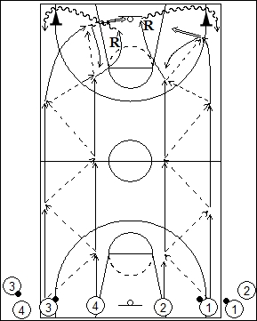

Catégorie : PASSES (Pas-005)
Déroulement
- Quatre files de joueurs à une baseline. Les joueurs des files 1 et 3 possèdent un ballon.
- Les premiers joueurs des files 1 et 2 vont vers le panneau opposé en se passant le ballon; le premier joueur de la file 1 termine par un jump shoot et revient dans le même couloir à hauteur de la ligne des lancers-francs; le joueur 2 prend le rebond et contourne le cône en dribble; 1 et 2 reviennent vers le panneau de départ en se passant le ballon et 2 fera un lay-up. Pendant ce temps les premiers joueurs des files 3 et 4 ont réalisé la même chose avec lay-up en allant et jump shoot au retour.
- Chaque shooteur réalise son rebond. Après sa dernière passe, 1 va en 2. Après son lay-up et son rebond, 2 va en 3. Après sa dernière passe, 3 va en 4. Après son jump shoot et son rebond, 4 va en 1. Les quatre joueurs suivants démarrent alors.
Coaching points
- Insister pour que les quatre joueurs partent chaque fois en même temps.
- Toujours réaliser le lay-up du côté gauche et le jump shoot à droite.